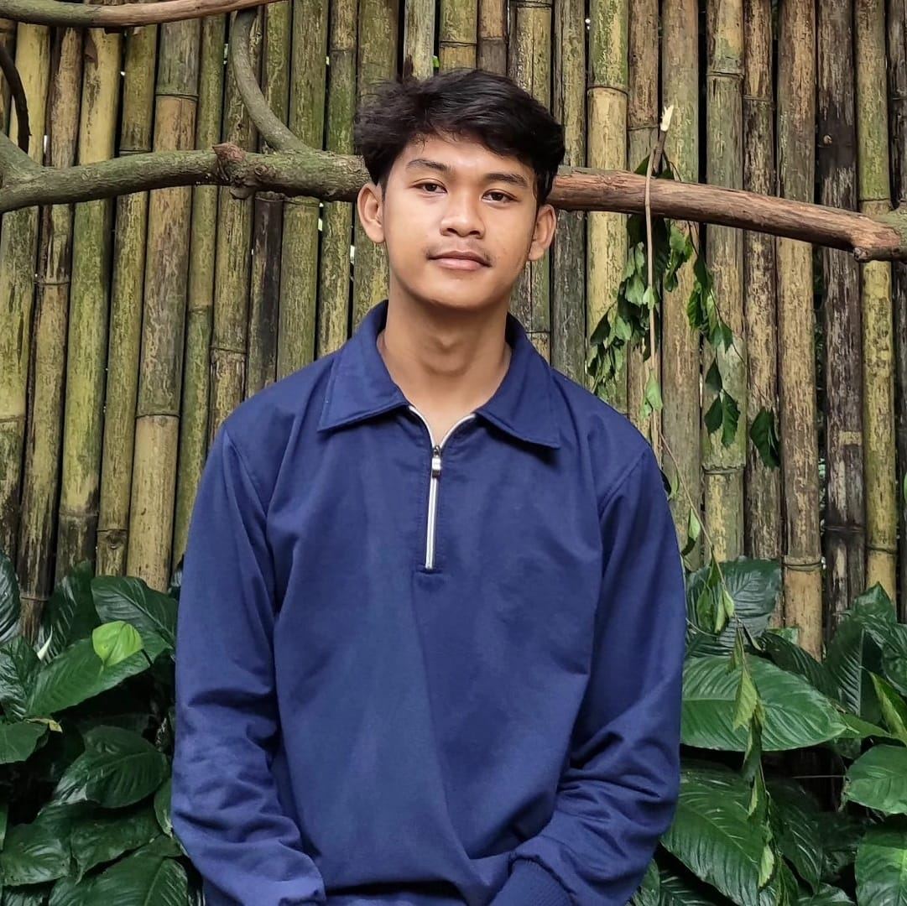
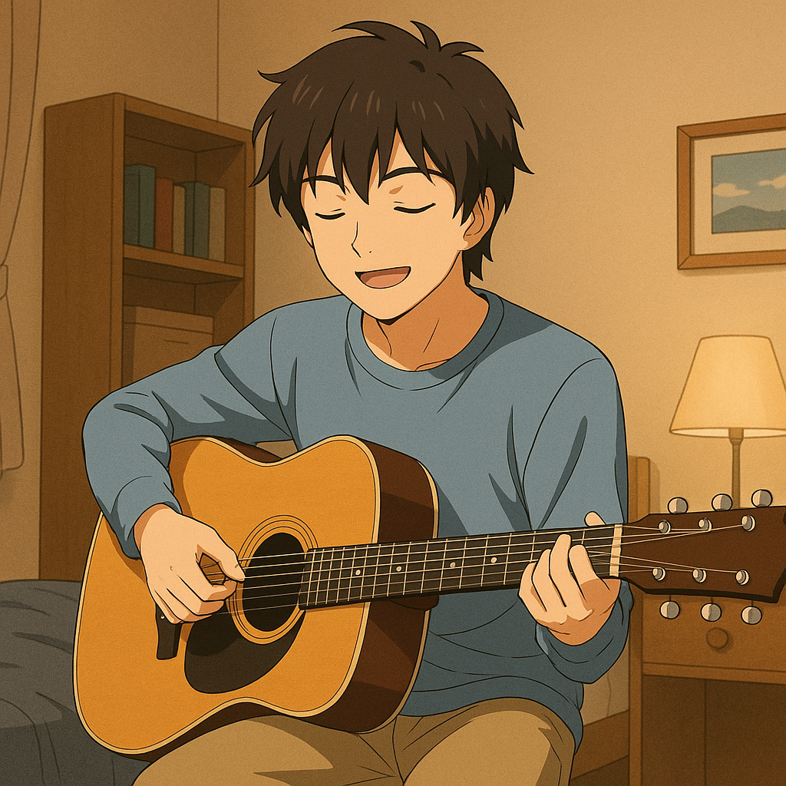

Contact
Telepon: +62 813 2259 1469
Email: rafimn0212@gmail.com
Alamat: Kp. Papakserang RT/RW 02/01 Kec. Ciparay
About Me
Saya lulusan SMK Negeri 7 Baleendah jurusan Rekayasa Perangkat Lunak (RPL) yang memiliki semangat tinggi untuk terus berkembang.
Saya terbiasa berkomunikasi dengan baik, ramah, serta mampu bekerja sama dalam tim.
Dengan etos kerja yang tinggi, saya bertanggung jawab dalam menyelesaikan tugas, mampu beradaptasi dengan cepat,
dan antusias dalam memberikan pelayanan yang baik.
Skills
- Desain Grafis
- Pemrograman Tipis
- Kerja Sama Tim
- Komunikasi
|
Rafii Muhazzid Nurrisky
Pendidikan
- SMKN 7 Baleendah (2022 - 2025)
- SMP Itikurih Hibarna (2019 - 2022)
Pengalaman
- PKL Di LPK Kanira
- Menjadi Operator Komputer: Berpengalaman dalam penggunaan software CorelDRAW serta Microsoft Office seperti Word, Excel, dan PowerPoint. Saya juga belajar mengelola data peserta kursus sebagai admin.
- Menjadi Instruktur Muda: Berpengalaman menjadi instruktur desain grafis. Saya menjadi pribadi yang bertanggung jawab dan komunikatif.
Hobby Saya
Bermain Musik

|
Bermain Musik
|
Bermain Musik
|
Bermain Musik
|
Bermain Musik
|
|